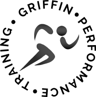
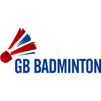
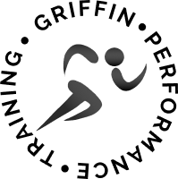
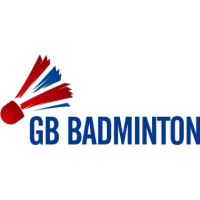
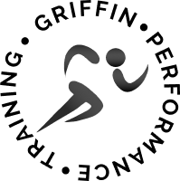
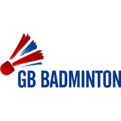
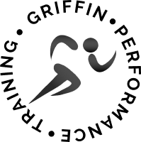
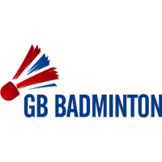

I manage and am responsible for the academy innovation & research philosophy, strategy, & process. My responsibly is focused on solutions for the Academy, but also including the 1st Team, Commercial Department, & Foundation, across four buckets: data, workflow, products, research. This multi-departmental collaboration is facilitated through my chairing of the Innovation Group meetings. Specifically regarding the academy, I am responsible for research across eight depts – scouting, coaching, sport science & medicine, welfare, education, match analysis, psychology - external relationships & collaborations, & placement students.

I was initially hired to prepare the sport science department for the EPPP re-audit; the academy had failed the audit the season previous. I provided leadership & change management oversight to the department, which included developing a new departmental philosophy. I was responsible for re-writing the departmental EPPP documentation, updating policies & procedures to align with a newly developed philosophy; Fulham FC Academy retained its Category I status with the sport science department mentioned as “outstanding”. I managed a staff of 12 including full-time, consultants, & placement students delivering S&C, sport science & nutrition provision across the FDP, YDP & PDP for 180 footballers. I developed a comprehensive CPD program for the department and individuals and led several research projects addressing the needs of each of the three academy phases.
I presented lectures for undergraduate years 1-3 & masters graduates, as well as provided pastoral care for tutees. I was the Module Leader for several under-graduate modules, in areas including statistics, applied coaching, and physiology of performance. I designed & implemented the ‘Gold Medal Internship program’ with six strategically local professional teams & NGB’s, providing 6-8 students with applied professional work experience while undergraduates. As a PhD student I designed & project managed five research studies & was the lead author on several published peer-reviewed articles. In addition, I presented my research findings at local, regional, and national conferences.
I presented lectures for undergraduate years 1-3 & masters graduates, as well as provided pastoral care for tutees. I was the Module Leader for several under-graduate modules, in areas including statistics, applied coaching, and physiology of performance. I designed & implemented the ‘Gold Medal Internship program’ with six strategically local professional teams & NGB’s, providing 6-8 students with applied professional work experience while undergraduates. As a PhD student I designed & project managed five research studies & was the lead author on several published peer-reviewed articles. In addition, I presented my research findings at local, regional, and national conferences.
As the first full-time assistant coach to the rugby programme I oversaw much of the administration relating to the RFU and university, as well as assisting with the recruitment processes by presenting to parents & potential athletes & overseeing on-campus visits. I was Head Coach for Squad II, responsible for four assistant coaches and the freshman year trial system, the 3rd XV and Freshman XV.

I was hired and placed as a member of Ford of Europe’s ‘All New Ford Fiesta’ pan-European dealership product launch project team, Marbella, Spain. This was a £22M project, requiring 44-day project days, and overseeing 24,000 delegates. I developed information for country-specific service providers on product launch information and was then reasonable for training them on the information.
I was head hunted as the senior account manager to the IT training services team. I was soon promoted to regional sales manager, responsible for the London & South East England regional sales target of £1M/p.a.
I was hired as a junior sales executive tasked with finding leads. I was quickly promoted to sales executive with monthly targets. Due to my success I was again quickly promoted to team leader, responsible for two junior salespeople, and the team sales target.
Griff manages the academy innovation strategy, which has four pillars: data,
external relationships, product development, and scientific research. His is focused on identifying
opportunities within these pillars across the academy where innovative solutions will enhance support delivery
to the players. Benefits to other areas of the organisation including the 1st team, commercial department, and
Foundation are facilitated through the chairing of the FFC Innovation Group...
Regarding the academy, Griff is additionally responsible for supervision of MSc and PhD researcher’s the
execution of projects and the student placement programme.
Read More
Griff was hired to prepare the sport science department for the 2017 EPPP re-audit.
Griff provided leadership and change management oversight to the department, underpinned by the development of
a new departmental philosophy and working processes. He was responsible for re-writing the departmental EPPP
documentation and updating policies and procedures to align with the newly developed academy philosophy;
Fulham FC Academy retained its Category I status with the sport science department mentioned as
“outstanding”...
Griff provided leadership regarding the philosophy, policy and process update regarding youth athlete S&C
programming to include utilisation of growth and maturation data, the introduction of a multi-sports
programme and the introduction of training load management processes. Griff managed a staff of 12 including
full-time, consultants, and placement students delivering S&C, sport science and nutrition provision across
the FDP, YDP and PDP for 180 footballers. In addition, he developed a comprehensive CPD program for the
department and individual staff members and led several research projects across the FP/YDP/PDP.
Read More
Griff prepared and presented lectures for the Strength and Conditioning Science
undergraduate and masters programmes, as well as provided pastoral care for tutees. He was the module leader
for several undergraduate modules, in areas including statistics, applied coaching, and physiology of
performance. As an innovator he designed and implemented a placement programme providing applied professional
sport work experience for undergraduates. He also co-developed and delivered a critical thinking course for
the freshmen class...
As a PhD student Griff designed and project managed five research studies, including collaboration with
England Men’s Rugby 7’s and Richmond RFC championship 1st XV, and was the lead author on several published
peer-reviewed articles. In addition, he presented his research findings at local, regional, and national
conferences.
Read More
As the Director of Rugby Griff was responsible for a $250K annual budget, ~110
athletes, six volunteer assistant rugby coaches, one assistant S&C coach, one full time assistant coach, one
athletic trainer and one doctor. He had executive reporting duties into the Athletic Department, the rugby
alumni board and player leadership group. Working in collaboration with the alumni board there was an on-going
programme to grow the supporting financial endowment, in additional to donations raised for capital upgrades
to the rugby stadium, practice equipment, funding of assistant coaches and support staff, and the
establishment of a specific budget to ensure all student-athletes selected to All-Star and National Team camps
were financially supported...
His project management skills were employed to ensure the bi-annual overseas tours, residential annual
spring break training camps, and extensive regional and national travel for conference and play-off’s had
appropriate itineraries and funding. In addition, Griff assisted the Athletics Department with the hosting
of seven televised USA Rugby Collegiate National Championships and several US Rugby Eagles national team
training & World Cup qualifying events. As the head coach he was responsible for all aspects of athlete
recruitment and on-field coaching. Assistant coaches were encouraged to have significant autonomy within the
playing and coaching philosophy. Griff supported the wider Pacific Coast coaching community running CPD
events at the Stanford rugby stadium as well as providing mentoring to several coaches.
Read More
Griff was assistant 1st XV squad coach for six seasons with responsibility for
attack strategy and skill development. Griff managed the 2nd XV on match day leading the ‘Vikings’ to six
league wins, six win’s V’s Oxford University Varsity 1st XV and the Royal Navy 1st XV, as well as the head
coach role for the 2016 British and Irish Cup campaign. In addition, he has coached the u16 and u17 boys
during his time at the club.
..
Griff moved to the role of Head Coach for the Women’s Tyrrells Premiership squad for the 2018/19 season and
installed a coaching and performance analysis team, and a productive player recruitment drive. He provided
the leadership to meet the RFU’s minimum operating standards ensuring the club maintained its position in
the Tyrrells Premiership for the season. In addition, Griff oversaw the transition of five youth players
from the centre of excellence into the 1st XV squad.
Read More
As the first full-time assistant coach to the rugby programme Griff oversaw the RFU
and university related administration of the programme, as well as assisting with the recruitment processes
and establishing relationships with several academic departments. Griff was Head Coach for Squad II, where he
was responsible for four assistant coaches, the freshman trial system, the 3rd XV and Freshman XV.
Griff was contracted to the IRFU as the lead S&C coach for UK based Irish
international rugby players preparing them for the 2015 Women’s World Cup and 2015 and 2016 6-Nations
Championship. Griff worked closely with the IRFU national team heads of S&C, medical and coaching to ensure
programming was addressing the agreed physical and physiological KPI’s.
Griff has worked with a variety of athletes and sports including rugby, football,
fencing, and para-triathlon, providing S&C consultancy/services on a 1-1 or small group setting, with much of
this work is completed in collaboration with his partners.